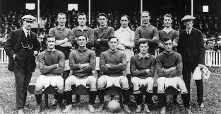

Origins and Early Development
Football, known as soccer in some countries, has ancient origins dating back over 2,000 years. The earliest known forms of football-like games were played in China (Cuju), Greece (Episkyros), and Rome (Harpastum). These early games involved kicking a ball and were often part of military training exercises.
During the Middle Ages in Europe, various forms of "mob football" emerged, particularly in England. These games had few rules, unlimited players, and were often played between neighboring towns and villages. The games were so violent that they were banned by several kings, including Edward II in 1314.
The Cambridge Rules (1848)
Students at Cambridge University attempted to standardize the rules, creating what became known as the Cambridge Rules. This was the first attempt to unify the different versions of the game being played at various English public schools.
On October 26, 1863, representatives from 11 London clubs and schools met at the Freemasons' Tavern to establish the Football Association (FA). This meeting led to the creation of the first unified rules of football, which notably banned carrying the ball with hands.
The Split from Rugby (1863)
The FA's decision to ban carrying the ball led to a split with rugby football. Those who preferred handling the ball formed the Rugby Football Union in 1871, creating a clear distinction between association football (soccer) and rugby football.
Global Expansion
International Spread (1870s-1900s)
Football spread rapidly through the British Empire and beyond:
- 1872: First official international match (Scotland vs. England)
- 1880s: Football introduced to South America by British sailors and workers
- 1888: Formation of the Football League in England, the world's first professional league
- 1904: Foundation of FIFA (Fédération Internationale de Football Association)
The World Cup Era
- 1930: First FIFA World Cup in Uruguay, won by the host nation
- 1950: Introduction of the European Cup (now UEFA Champions League)
- 1970: First live television broadcast of World Cup matches worldwide
Evolution of the Game
Rule Changes and Innovations
- 1872: Standardization of ball size and weight
- 1875: Introduction of the crossbar to replace tape
- 1891: Introduction of penalty kicks
- 1925: Offside rule modified to encourage attacking play
- 1970: Introduction of red and yellow cards
- 1992: Back-pass rule introduced to prevent time-wasting
Tactical Evolution
- Early formations: 1-1-8, 2-3-5 (Pyramid)
- WM Formation: Herbert Chapman's 3-2-2-3 (1920s)
- 4-2-4: Brazilian innovation (1950s)
- Total Football: Dutch philosophy (1970s)
- 4-4-2: English standard (1980s-1990s)
- Tiki-taka: Spanish possession-based style (2000s)
Early Development
- 1895: First recorded women's football match in England
- 1920s: Peak of women's football with crowds of 50,000+
- 1921: FA bans women from playing on Football League grounds (lifted in 1971)
Modern Era
- 1971: UEFA recommends recognition of women's football
- 1991: First FIFA Women's World Cup
- 1996: Women's football becomes Olympic sport
- 2023: Record-breaking Women's World Cup with expanded 32-team format
| Year |
Event |
Significance |
| 1863 |
Formation of The FA |
First football governing body |
| 1872 |
First FA Cup Final |
Oldest football competition |
| 1888 |
Football League founded |
First professional league |
| 1904 |
FIFA founded |
International governing body |
| 1930 |
First World Cup |
Global tournament established |
| 1955 |
European Cup begins |
Birth of continental club competition |
| 1992 |
Premier League formed |
Modern commercial era begins |
| 2005 |
Goal-line technology proposed |
Technological innovation |
| 2018 |
VAR introduced in World Cup |
Video Assistant Referee debut |
Cultural Impact
Global Phenomenon
Football has become more than just a sport - it's a global cultural phenomenon that:
- Transcends political and social boundaries
- Generates economic impact through clubs, leagues, and merchandise
- Influences fashion, music, and art
- Serves as a platform for social change and activism
Economic Evolution
- Amateur Era (pre-1880s): No player payments
- Early Professionalism (1880s-1960s): Modest wages
- Commercial Era (1970s-1990s): TV rights and sponsorships
- Global Branding Era (2000s-present): Billion-dollar transfers, global merchandising
Current Trends and Challenges
- Financial Inequality: Growing gap between elite clubs and smaller teams
- Technology Integration: VAR, goal-line technology, AI analytics
- Sustainability: Carbon-neutral events, eco-friendly stadiums
- Player Welfare: Concussion protocols, mental health awareness
- Global Calendar: Balancing club and international commitments
Innovations on the Horizon
- Semi-automated offside technology
- Enhanced player tracking systems
- Sustainable stadium designs
- Interactive fan experiences through AR/VR
- Global league competitions
Legacy and Continuing Evolution
Football continues to evolve while maintaining its core appeal. From the muddy fields of 19th-century England to the high-tech stadiums of today, the beautiful game has remained a constant source of passion, drama, and community for billions worldwide. Its history is not just a record of matches and trophies, but a reflection of social change, technological progress, and human achievement.
"Some people believe football is a matter of life and death. I am very disappointed with that attitude. I can assure you it is much, much more important than that."
— Bill Shankly